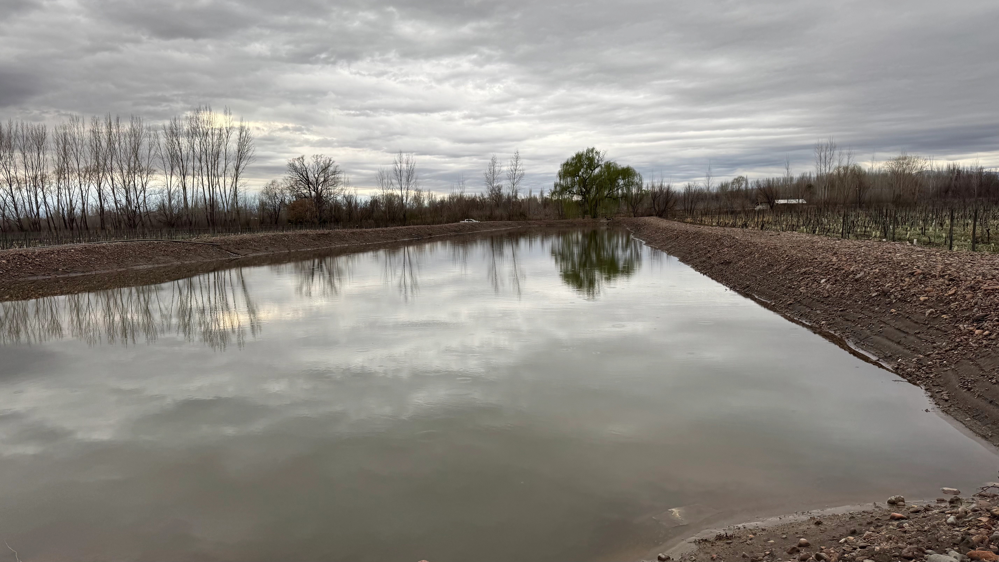
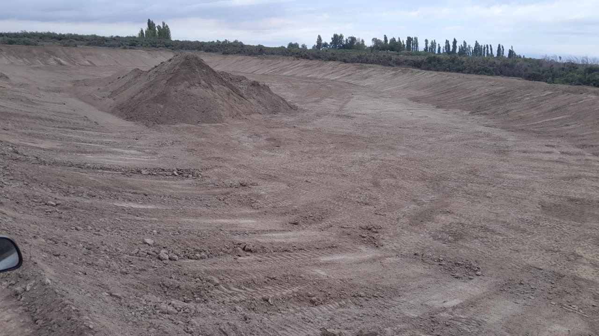
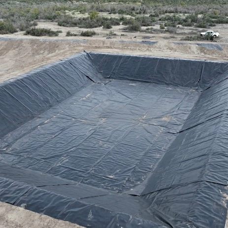
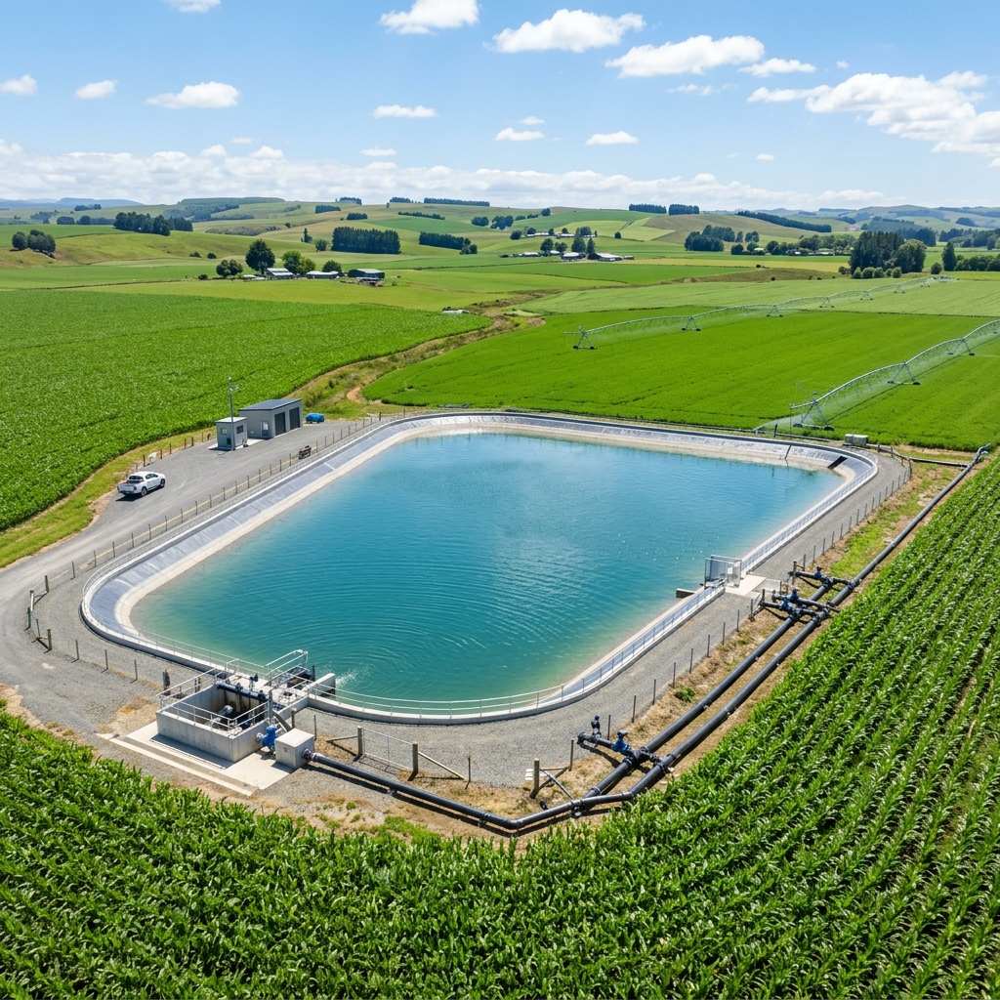
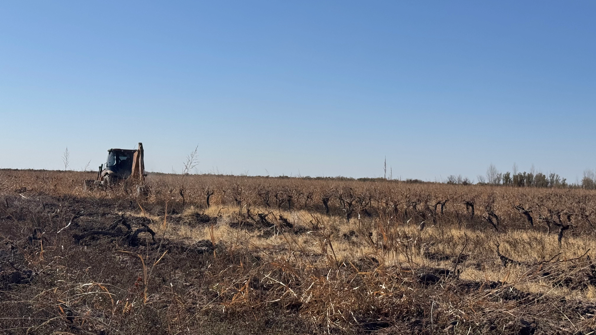

El Valor de la Ingeniería Estratégica
Frente a la escasez hídrica y la variabilidad climática, el almacenamiento inteligente y la eficiencia ya no son opciones, son imperativos. En Roots, transformamos el desafío del territorio en rentabilidad asegurada para tu negocio.
Ingeniería en Acción: Obras que Transforman el Territorio


Infraestructura que Asegura Rentabilidad

Agua Asegurada
Reservorios impermeabilizados de alta tecnología que eliminan la dependencia de los turnos de agua y blindan tu producción frente a cortes de suministro.

Productividad Maximizada
Diseño hidráulico y agronómico de precisión. Llevamos el agua justa en el momento exacto para maximizar el rinde y reducir mermas.

Eficiencia y Experiencia
Soluciones de vanguardia que minimizan pérdidas por evaporación y filtración. Desde el asesoramiento técnico y permisos, hasta una obra ordenada y acompañamiento postventa.
Capacidad de Ejecución Integral
No dependemos de terceros para lo crítico. Contamos con un equipo técnico-operativo propio y una red de proveedores consolidados (geomembranas, riego, maquinaria). Nuestra experiencia abarca desde reservorios medianos hasta grandes obras civiles, facilitando además el acceso a líneas de financiamiento estratégico (Agro Nación, CFI, BICE, FTyC).
Ingeniería de Riesgo Cero
Implementamos una rigurosa metodología de gestión operativa para garantizar que tu obra se ejecute sin contratiempos.
●
Calidad QA/QC
Auditorías continuas con ensayos de vacío y canal de aire en uniones térmicas para garantizar impermeabilización absoluta.
●
Seguridad Industrial H&S
Estrictos planes de seguridad, capacitación continua, EPP y auditorías internas en cada frente de obra.
●
Logística y Clima
Planificación inteligente con buffers de plazo, ventanas de obra controladas y acopio anticipado de insumos críticos.
●
Gestión Documental
Cronogramas de trámites previos y check-lists documentales exhaustivos antes de la movilización de maquinaria.
Gestión Ambiental Responsable
- → Suelos: Control estricto de erosión y sedimentos, con recomposición topográfica de áreas de préstamo.
- → Agua: Protección absoluta de cursos naturales, verificación de permisos hídricos y planes de contingencia.
- → Emisiones: Riego sistemático de caminos, control de horarios operativos y mantenimiento de maquinaria.
- → Residuos: Gestión circular de recortes de geomembrana y envases con disposición final certificada.

×
 Consultar por un proyecto similar
Consultar por un proyecto similar
Título de la Obra
Ubicación
Capacidad / Escala: ...
Descripción Técnica: ...
Impacto (Antes y Después): ...